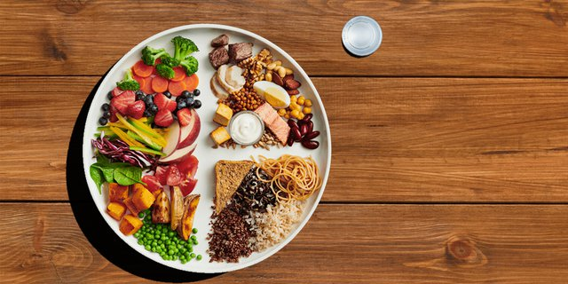

Makanan Bergizi
Mengonsumsi makanan bergizi tidak hanya meningkatkan kesehatan fisik, tetapi juga suasana hati. Nutrisi yang baik, aktivitas fisik, dan berat badan yang sehat adalah bagian penting dari mendapatkan hidup sehat yang berkualitas. Pasalnya, pola makan yang tepat dapat membantu mencapai berat badan ideal dan mengurangi risiko penyakit kronis seperti diabetes, kardiovaskular, dan jenis kanker lainnya.